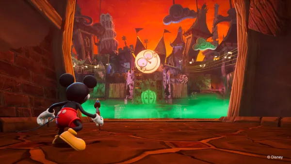
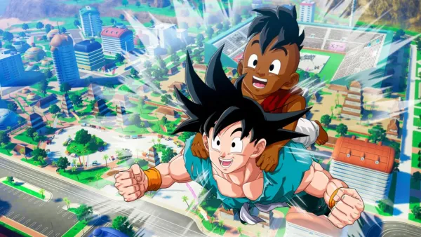
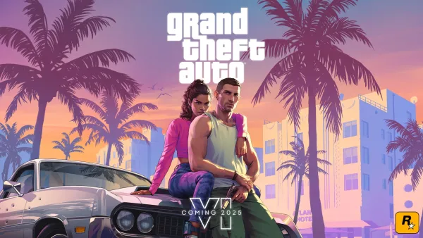
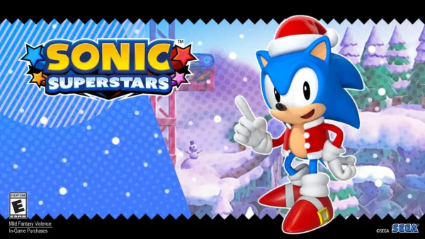
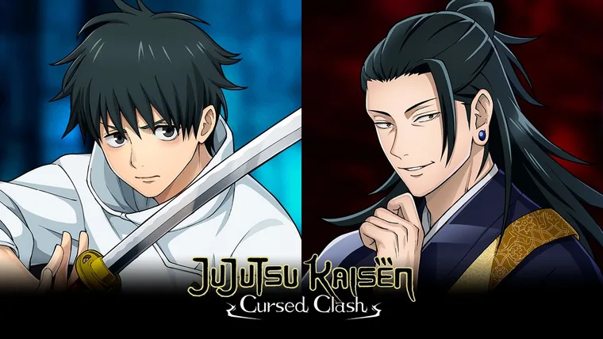
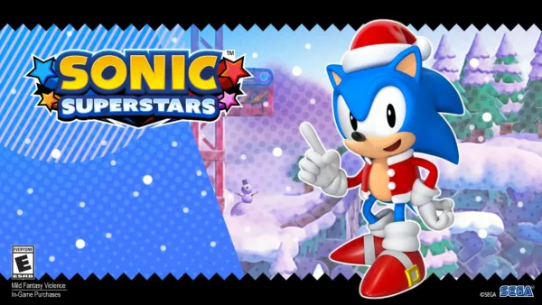
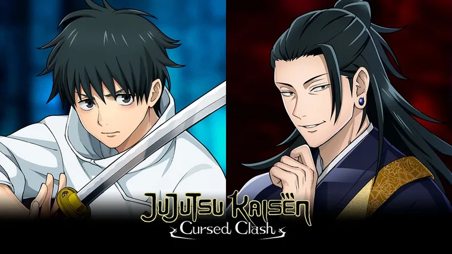

Recomendados
 
 



Mario vs. Donkey Kong, un remake lleno de puzles y diversión

Si hay algo que Nintendo haga de forma excelente, es crear diferentes spin offs, donde sus personajes protagonizan juegos de diferentes géneros, por ejemplo, tenemos a Mario participando en todo tipo de deportes y cada uno con sus propias mecánicas, lo que les ha permitido instaurar sagas ya reconocidas dentro de sus ámbitos. Dentro de estas entregas debemos destacar aquella que surge del concepto original que creó a nuestro fontanero favorito y al rey de la jungla, Mario vs. Donkey Kong, que recientemente recibió un remake y hoy en La Vida es un Videojuego se hablará de él.

Un remake con toques de jazz
entonces por destacar la gran mejora en su apartado visual, y es que es inevitable, debido a que la entrega original de 2004 es de Game Boy Advance, por ende, como es común en los juegos de Nintendo, todo se ve bonito, de hecho, ahora es posible distinguir incluso el pelaje de Donkey Kong. Esta calidad también se traslada a los escenarios, los cuales nos llevarán por toda clase de paisajes, recorriendo junglas, montañas, volcanes, bosques y ciudades, todos ellos con ambientaciones muy bien logradas.

La música es otro de los grandes distintivos en este remake, ya que esta cambia según el mundo recorrido. Estuvo a cargo de Schwedbeast Studios, LLC, ofreciéndonos diferentes temas de gran calidad que hacen uso especial del formato Big Band y el género jazz, para transportarnos a través de todos los lugares por los que perseguimos al gran simio.

¿Puzles y plataformas? ¡Lo compro!
Mario vs. Donkey Kong es básicamente un juego de acertijos y plataformas, en donde debes coleccionar los objetos para pasar el tablero. Además, puedes rotar entre modo clásico o, si eres un jugador muy casual, modo relajado, que elimina el tiempo límite del reto y te da cinco golpes de gracia antes de perder una vida.

Todos los escenarios constan de dos fases, en la primera debemos conseguir una llave para poder pasar a la segunda fase; en esta última debes tomar al Mario de juguete o Mini-Mario. Sin embargo, si sufres de la maldición del completista que padecen los gamers, te verás obligado a encontrar tres cajas de regalo, esparcidas en ambas fases y que son indispensables para conseguir una estrella dorada, símbolo de tu esfuerzo.

Aun así, no es juego muy difícil en su modo estándar. Pero si eso aún no te convence, se agregó un modo multijugador, para que le pases el Joy-Con a otra persona y puedan probar suerte juntos. No obstante, en este deberás conseguir dos llaves para abrir las puertas, haciendo que el reto no sea extremadamente sencillo.

A su vez, la acción recuerda un poco a Super Mario 2, en donde no aplastas a los enemigos, sino que te paras sobre sus cabezas y los levantas, ya sea para eliminar a otros al lanzarlos o abrirte camino mientras te cargan.
Algo muy seguro, es que vas a morir una y otra vez, ya que, se sigue aplicando la constate videojugadora de prueba y error, por lo que en todos los mundos se desbloqueará un reto bonus después de completar cuatro o cinco niveles. En estos debes atrapar una llave antes de 30 segundos para abrir el cofre donde se esconden los champiñones verdes.

Eternos rivales
En esta entrega se hará uso de la eterna rivalidad entre Mario y Donkey Kong, pues este último se roba todos los Mini-Mario de la fábrica de juguetes al no poder comprar uno. Esto lleva a que persigamos al gorila por ocho mundos diferentes, mientras recolectamos todo el botín que deja caer, por lo tanto, la trama no es muy profunda, aunque, funciona lo suficiente para darle un propósito a nuestras acciones.

Cabe destacar que una vez lo terminas por primera vez, se desbloquearán tres nuevos desafíos. El primero es un contrarreloj, en el cual desaparecen los coleccionables y solo debes enfocarte en conseguir la llave y al Mini-Mario dentro del tiempo límite. El segundo son los niveles expertos, en donde hay una redistribución del escenario y es mucho más complejo coleccionar todos los objetos, no sobra mencionar que estos niveles también constan de un desafío contrarreloj. Y finalmente, los niveles +, que hacen parte de la historia, pero se dificultan un poco porque debes hacer uso de los Mini-Mario para culminarlos.

Mario vs. Donkey Kong es un título que cumple con lo prometido, que permite a los antiguos fanáticos de la saga revivir un gran juego, o que quienes no lo conocían (como yo), puedan disfrutarlo por vez primera. He logrado encontrarme con niveles que hacen pensar mucho y otros más que piden bastante habilidad, pero, sobre todo, me he divertido un montón, siendo este elemento el más valioso dentro de los videojuegos.